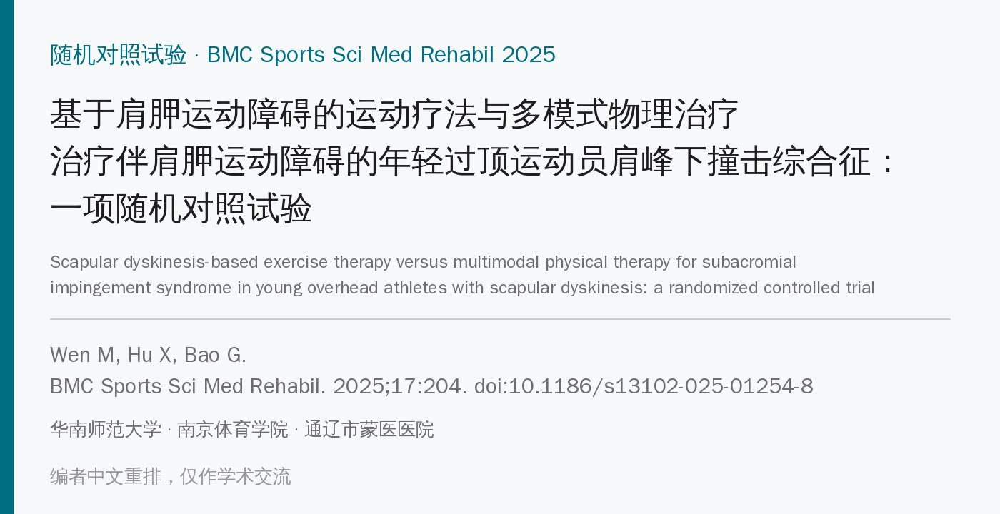
🔖原文信息（编者中文重排）
📚 文献信息
▪ Wen M, Hu X, Bao G. Scapular dyskinesis-based exercise therapy versus multimodal physical therapy for subacromial impingement syndrome in young overhead athletes with scapular dyskinesis: a randomized controlled trial. BMC Sports Sci Med Rehabil. 2025;17:204. doi:10.1186/s13102-025-01254-8
▪ 中文题目：基于肩胛运动障碍的运动疗法与多模式物理治疗治疗伴肩胛运动障碍的年轻过顶运动员肩峰下撞击综合征：一项随机对照试验
▪ 作者来自华南师范大学、南京体育学院和通辽市蒙医医院
▪ 文章类型：单中心、单盲、平行组随机对照试验（中国临床试验注册中心 ChiCTR2500100213，回顾性注册）
• 肩峰下撞击综合征（SIS）占肩痛的 44%～65%；在过顶运动员中占肩部损伤的 27%，大学游泳运动员的患病率可达 47%，且多为继发性撞击，即功能性运动异常引起，而不是骨性结构问题
• 肩胛运动障碍（SD）指肩胛在静止或运动时位置、运动异常，上回旋、后倾和外旋不足会缩小肩峰下间隙；SIS 患者常见上斜方肌过度激活，中、下斜方肌和前锯肌激活受抑，胸小肌、大圆肌、上斜方肌和肩胛提肌紧张
• 90%～95% 的 SIS 保守治疗，传统物理治疗以止痛和改善活动度为主（超声、手法、活动度练习）；但先评估 SD、再针对性训练的方案，与传统物理治疗直接比较的研究很少
• 研究目的：在伴 SD 的年轻男性过顶运动员中，比较基于肩胛运动障碍的运动疗法（SDBET）和多模式物理治疗（MPT）的效果，并探讨差异的机制；主要假设是第 12 周 SDBET 优于 MPT
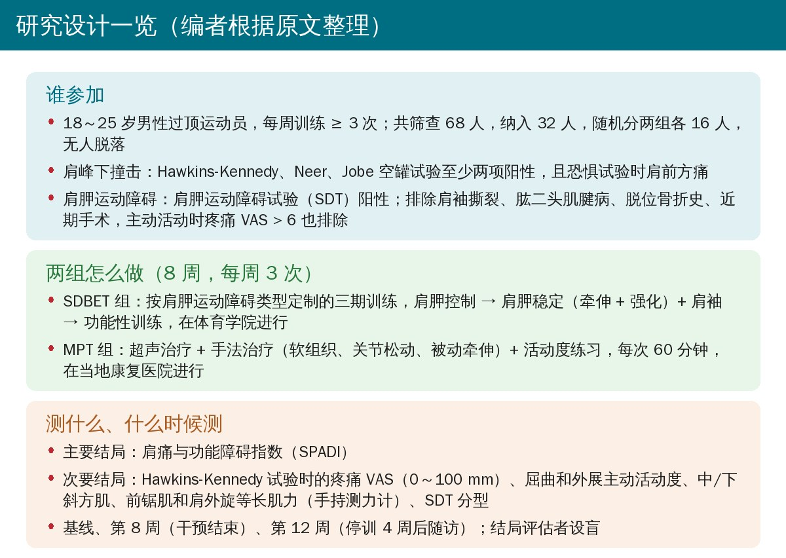
🔖编者根据原文整理
• 2024 年 9—10 月在通辽的一所体育学院、一家体育俱乐部和一家医院康复科招募，筛查 68 人，纳入 32 人，按电脑随机数分两组各 16 人（简单随机，不分区组、不分层），不透光信封隐藏分配
• 样本量：G*Power 按重复测量组间×时间交互、效应量 f = 0.25、α = 0.05、把握度 0.80 算得 28 人，加 15% 脱落后为 32 人
• 只有结局评估者和数据分析者设盲；SDBET 在体育学院做，MPT 在当地康复医院做
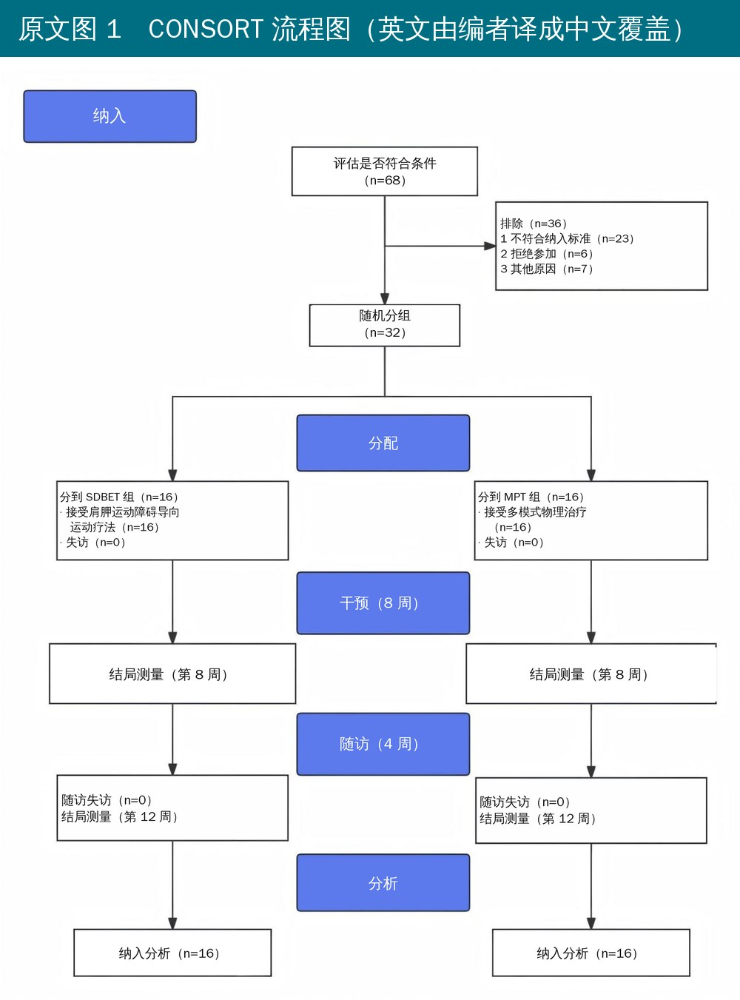
🔖原文图 1（英文由编者译成中文覆盖）
• 第一期（第 1 周）：肩胛控制训练，包括肩胛定位、Y-T-W-L 和四点跪位肩胛前伸与后缩
• 第二期（第 2～6 周）：在第一期基础上，按 SD 分型做对应的牵伸和强化，并加肩袖训练
• 第三期：无明显疼痛才进阶，加割草机训练、肩胛俯卧撑、平板支撑和 90° 外展位弹力带内外旋
• 强度用 Borg CR10 控制在轻到中等（第一期 2～3，第二期 3～4，第三期 4～5）；红色弹力带、4 磅哑铃，多数动作 3 组 × 10～12 次
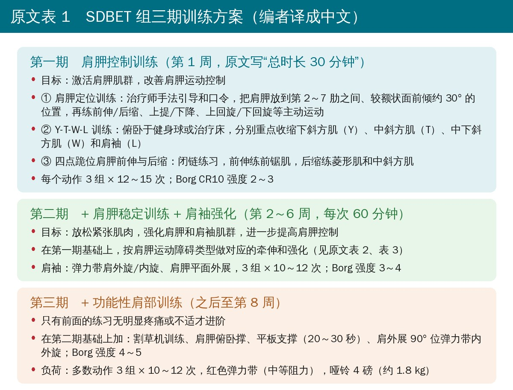
🔖原文表 1（编者译成中文）
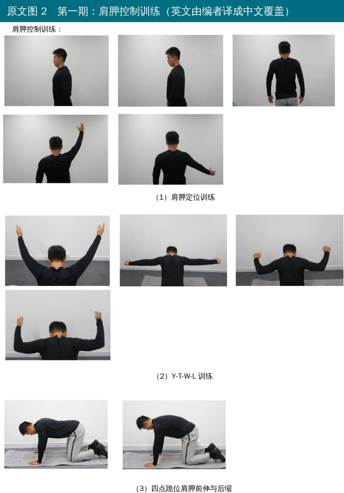
🔖原文图 2（英文由编者译成中文覆盖）
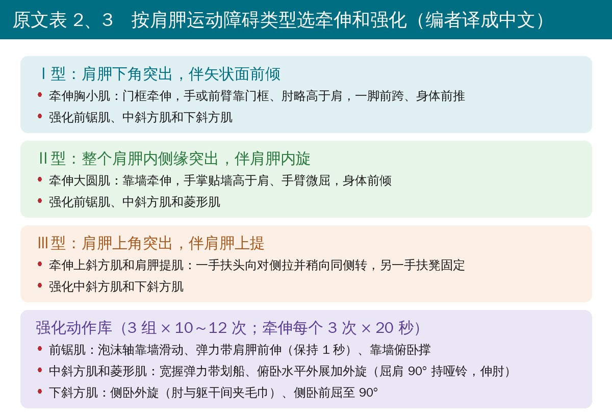
🔖原文表 2、表 3（编者译成中文）
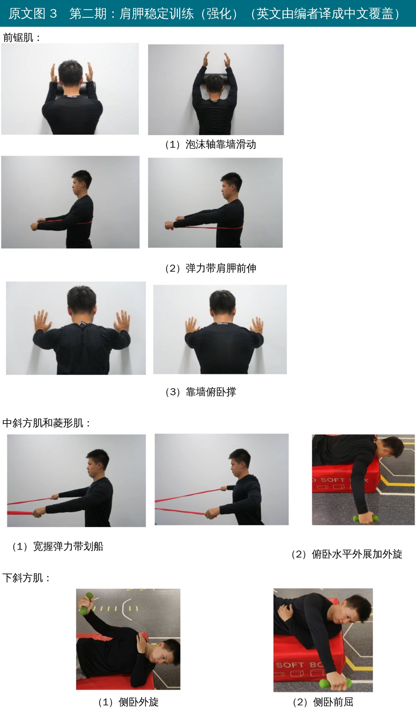
🔖原文图 3（英文由编者译成中文覆盖）
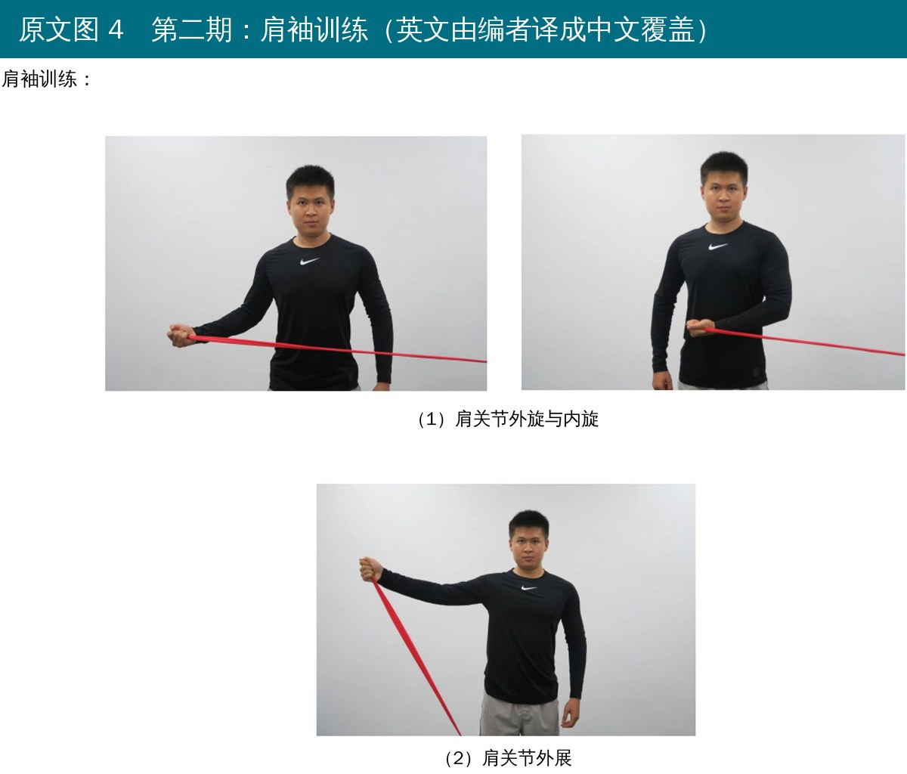
🔖原文图 4（英文由编者译成中文覆盖）
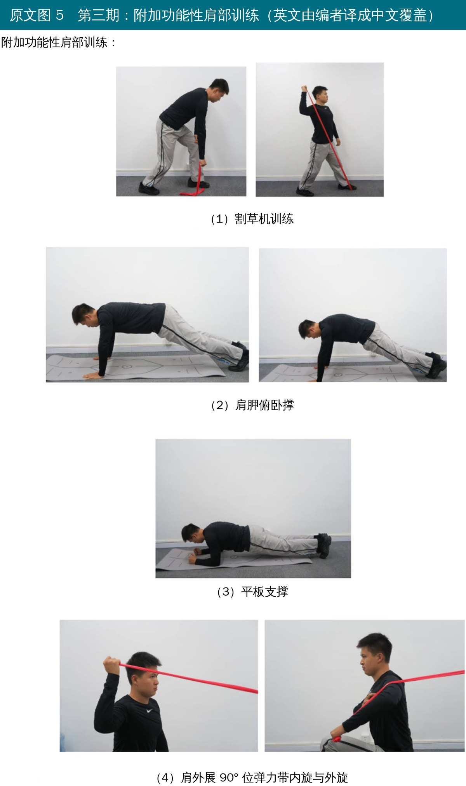
🔖原文图 5（英文由编者译成中文覆盖）
• 每周 3 次、共 8 周、每次 60 分钟，依次做脉冲超声（1 MHz、1.0～1.5 W/cm²、8 分钟）、手法治疗（摩擦按摩、肌筋膜放松、Maitland 关节松动、被动牵伸）和爬墙、钟摆、体操棒练习
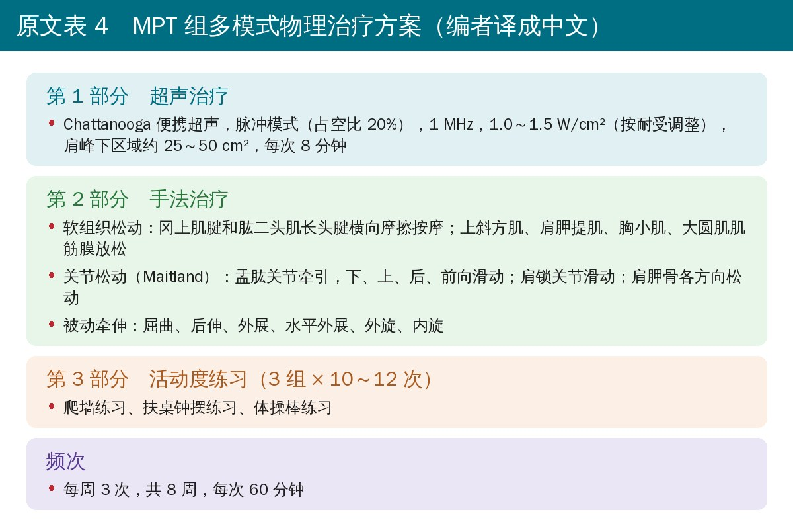
🔖原文表 4（编者译成中文）
• 主要结局：中文版 SPADI（0～100%，越高功能障碍越重）
• 次要结局：Hawkins-Kennedy 试验诱发的疼痛 VAS（0～100 mm）；电子量角器测无痛主动屈曲和外展；Hoggan MicroFET2 手持测力计测中斜方肌、下斜方肌、前锯肌和 90° 外展位肩外旋等长肌力（三次取均值，kg）；按 Kibler 法录像判读 SDT 分型（Ⅰ型下角突出、Ⅱ型内侧缘突出、Ⅲ型上角突出、Ⅳ型正常）
• 基线、第 8 周（干预结束）和第 12 周（恢复常规训练 4 周后）各测一次；SDT 以外的指标用混合设计方差分析，交互作用显著再做简单效应分析，Bonferroni 校正；SDT 组间用 Fisher 精确检验
• 32 人全部完成 8 周干预和 4 周随访，无脱落、无缺失；两组基线年龄（约 21 岁）、身高、体重及各结局指标均无差异
• 无严重不良事件；SDBET 组 2 人在第一期因肩胛上回旋不足、动作不规范出现轻度撞击痛，纠正动作后完成全程
• 所有指标时间主效应均显著（偏 η² 0.71～0.92），时间×组别交互作用均显著（偏 η² 0.15～0.76）
• SPADI：两组第 8 周都下降约 21 分，组间无差异（24.2 vs 25.1，P = 0.316）；第 12 周 MPT 组回升到 29.4，SDBET 组保持在 23.4，组间差约 6 分（95% CI 4.1～7.9，P < 0.001，偏 η² = 0.59）
• 疼痛 VAS：第 8 周 MPT 组止痛更好（26.4 vs 30.9 mm，P = 0.018）；第 12 周 MPT 组回升到 33.0 mm，两组无差异（P = 0.268）
• 无痛主动活动度：第 8 周两组都提高约 10～20°，无差异；第 12 周 MPT 组屈曲回落到 163.7°、外展回落到 153.1°，SDBET 组保持在 171.1° 和 162.6°，组间差约 7° 和 10°（均 P < 0.001）
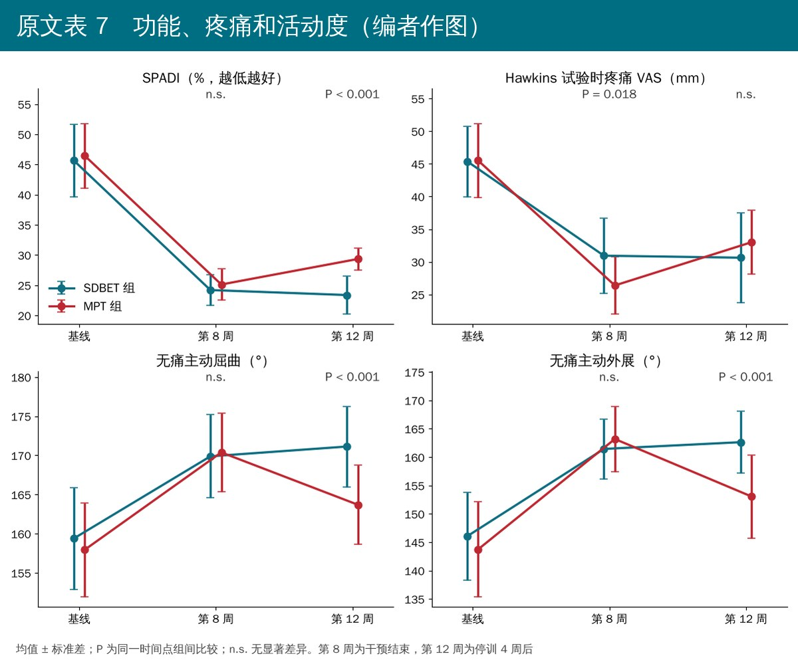
🔖根据原文表 7 作图
• SDBET 组中斜方肌、下斜方肌、前锯肌和肩外旋肌力第 8 周各增加约 2 kg（约 14%～34%），第 12 周保持；MPT 组四项肌力在任何时间点都没有变化
• 两个时间点的组间差异均 P < 0.001，偏 η² 0.57～0.74
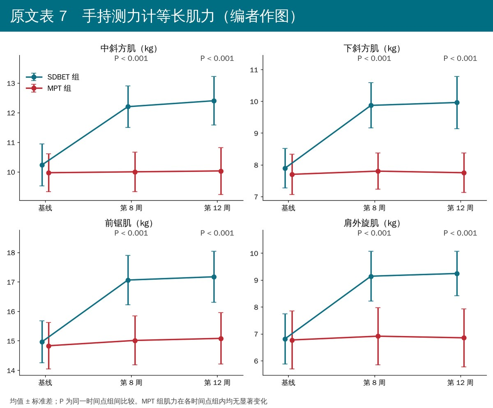
🔖根据原文表 7 作图
• 第 8 周 SDBET 组有 7/16 人（43.8%）转为Ⅳ型（正常），第 12 周不变；MPT 组没有一个人恢复正常，分型与基线完全一样
• 组间比较第 8、12 周 P = 0.018
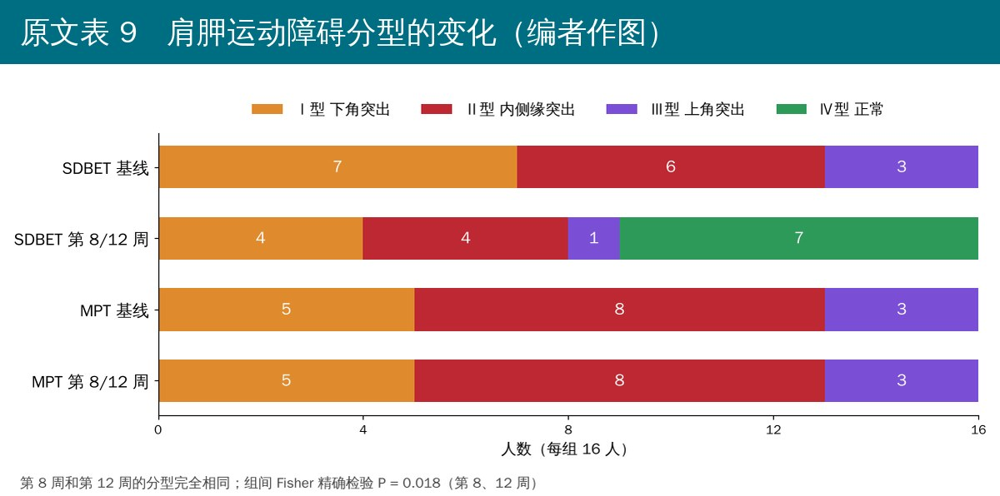
🔖根据原文表 9 作图
• MPT 第 8 周止痛更快，作者归因于超声、手法和活动度练习直接针对症状；而 SDBET 主要改善肌肉功能和神经肌肉控制，起效没那么快
• 停止干预、恢复常规训练后，MPT 组没有改善肩胛运动和关节稳定性，重新面对过顶负荷时症状复发；SDBET 组通过分期进阶、闭链练习和针对分型的牵伸强化，提升了本体感觉、肩胛控制和肌力，效果得以维持
• SD 改善率 43.8%，与 Tang 等报告的针对性肩胛稳定训练后 31.71% 恢复正常一致
• 结论：两种方法都能改善功能障碍、疼痛和活动度，但只有 SDBET 效果持久，针对性的治疗可能是物理治疗的方向
• 样本小、人群窄：32 名 18～25 岁男性过顶运动员，单中心，结果不能直接推到女性、中老年或非运动员的肩峰下撞击
• 随访太短：停训后只随访 4 周，复发率和长期效果未知；作者自己也建议随访 ≥ 6 个月
• 两组差的不只是“练还是不练”：两组在不同机构、由不同人员治疗，第一周的训练量也没说清（见下文），治疗师和受试者都无法设盲，也没有检验评估者盲法是否成功
• 组间差没达到最小临床重要差值：作者用 SPADI 14.1～20.6 分作为最小临床重要差值来算样本量，但第 12 周组间差只有约 6 分；疼痛的组间差（第 8 周 4.6 mm、第 12 周 2.4 mm）也远小于作者引用的 14 mm。两组组内改善都很大，组间差别有统计学意义但临床意义有限
• SDT 判读可靠性一般：作者引用的 Kibler 法评估者间信度只有 0.4、评估者内 0.5，而肩胛分型改善是论证“机制”的关键证据
• 肌力数据过于整齐：各组肌力标准差多在 0.6～1.1 kg，手持测力计测肩胛肌通常变异更大；MPT 组四项肌力 12 周内几乎纹丝不动，读者可留意
• 回顾性注册：入组完成后才注册，作者承认是管理疏忽；无法核对结局指标和分析方法是否事先确定
• 方向可信：主动、针对肩胛的训练比被动治疗效果更持久，与 Struyf、Roy 等此前的研究一致
• 摘要和正文的 SDT P 值不一致：摘要写 SDT 组间比较 P = 0.001～0.004，表 9 第 8、12 周的 Fisher 精确检验都是 P = 0.018
• 摘要把效应量张冠李戴：摘要说 SPADI“两组第 8 周均显著下降（P < 0.001，η² = 0.03）”，但 0.03 是表 7 第 8 周组间比较（P = 0.316）的效应量，不是组内下降的
• Fisher 精确检验不该有统计量：表 9“Fisher's Exact Test”一栏列出 0.72、9.67，Fisher 精确检验只给 P 值，这两个数可能是 Freeman-Halton 统计量或卡方值，原文没说明
• 参考文献整体错位一号：从第 50 条起，正文引用和文献表错开：如超声治疗引“[50]”，表中第 50 条却是 De Mey 的肩胛定位肌电研究（超声文献是第 51 条）；“Struyf 等 [79]”对应第 80 条，“Roy 等 [80]”对应第 81 条，“Tang 等 [85]”对应第 86 条，Hawkins 试验敏感度引“[66]”而第 66 条是 SPADI 原始量表，MCID 14 mm 引“[78]”而第 78 条是 Ludewig 的三维肩胛运动学研究
• “每周 3 次”只写给了 MPT 组：摘要说两组都是每周 3 次，但表 1 第一期写“第 1 周，总时长 30 分钟”，第二期写“每次 60 分钟”，第一期到底每次多久、一共几次不清楚；第三期的起止周也没有写
• VAS 的单位前后不一：排除标准用“主动活动时 VAS > 6”（按 0～10 分），结局指标却用 0～100 mm
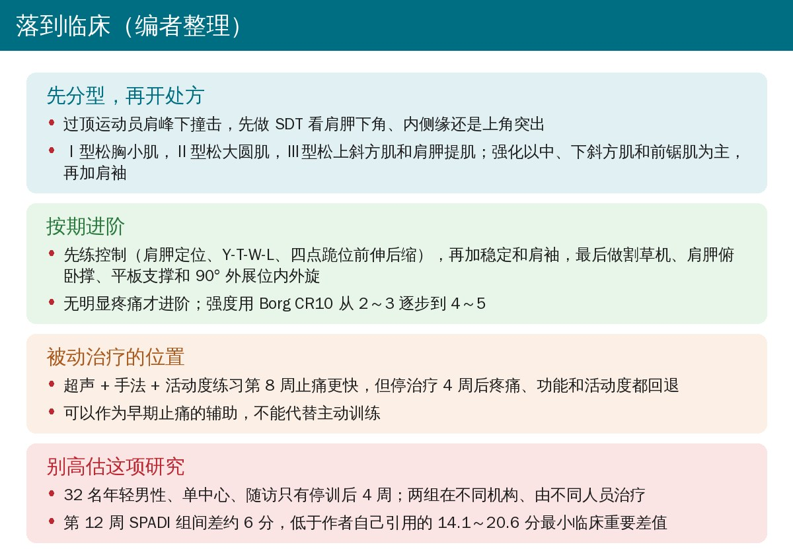
🔖编者整理
• 先分型：过顶运动员肩峰下撞击，先看肩胛运动，按下角突出、内侧缘突出、上角突出选择牵伸目标
• 练控制，再练力量：第一周就从肩胛定位、Y-T-W-L 和四点跪位开始，逐步加入中下斜方肌、前锯肌和肩袖强化，最后过渡到闭链和功能性动作
• 被动治疗当辅助：超声、手法和活动度练习能更快止痛，但停了就容易回退，不应作为唯一方案
• 回场前复测：重新看 SDT、测中下斜方肌、前锯肌和肩外旋肌力，再决定是否恢复全量过顶训练
表 5 受试者人口学特征（均值 ± 标准差）
| 变量 | SDBET 组（n = 16） | MPT 组（n = 16） | t | P |
|---|---|---|---|---|
| 年龄（岁） | 21.06 ± 2.52 | 20.63 ± 2.34 | 0.51 | 0.614 |
| 身高（cm） | 174.63 ± 5.50 | 174.19 ± 3.75 | 0.26 | 0.794 |
| 体重（kg） | 67.85 ± 4.61 | 68.61 ± 5.52 | −0.42 | 0.677 |
表 6 各结局指标的混合设计方差分析
| 结局指标 | 时间 F / P / 偏 η² | 组别 F / P / 偏 η² | 交互 F / P / 偏 η² |
|---|---|---|---|
| SPADI | 335.17 / < 0.001 / 0.92 | 8.52 / 0.007 / 0.22 | 5.19 / 0.023 / 0.15 |
| VAS | 220.90 / < 0.001 / 0.88 | 0.16 / 0.689 / 0.01 | 8.70 / < 0.001 / 0.23 |
| 屈曲活动度 | 120.53 / < 0.001 / 0.80 | 2.57 / 0.120 / 0.08 | 14.37 / < 0.001 / 0.32 |
| 外展活动度 | 137.91 / < 0.001 / 0.82 | 2.74 / 0.109 / 0.08 | 13.86 / < 0.001 / 0.32 |
| 中斜方肌（kg） | 100.79 / < 0.001 / 0.77 | 46.91 / < 0.001 / 0.61 | 92.70 / < 0.001 / 0.76 |
| 下斜方肌（kg） | 74.37 / < 0.001 / 0.71 | 52.92 / < 0.001 / 0.64 | 65.13 / < 0.001 / 0.69 |
| 前锯肌（kg） | 99.04 / < 0.001 / 0.77 | 28.41 / < 0.001 / 0.49 | 65.80 / < 0.001 / 0.69 |
| 肩外旋（kg） | 81.87 / < 0.001 / 0.73 | 22.84 / < 0.001 / 0.43 | 67.88 / < 0.001 / 0.69 |
注：时间为组内因素（基线、第 8 周、第 12 周），组别为组间因素（SDBET 与 MPT）。
表 7 描述统计和组间比较（均值 ± 标准差）
| 指标 | 时间 | SDBET 组 | MPT 组 | 偏 η² | 95% CI | P |
|---|---|---|---|---|---|---|
| SPADI | 基线 | 45.67 ± 6.01 | 46.46 ± 5.34 | 0.01 | (−4.89, 3.32) | 0.698 |
| 第 8 周 | 24.20 ± 2.55 | 25.12 ± 2.58 | 0.03 | (−2.78, 0.93) | 0.316 | |
| 第 12 周 | 23.37 ± 3.17 | 29.35 ± 1.80 | 0.59 | (−7.85, −4.12) | < 0.001* | |
| VAS | 基线 | 45.38 ± 5.40 | 45.50 ± 5.69 | 0.01 | (−4.13, 3.88) | 0.950 |
| 第 8 周 | 30.94 ± 5.79 | 26.38 ± 4.40 | 0.17 | (0.85, 8.27) | 0.018* | |
| 第 12 周 | 30.63 ± 6.85 | 33.00 ± 4.90 | 0.04 | (−6.68, 1.93) | 0.268 | |
| 屈曲活动度（°） | 基线 | 159.38 ± 6.50 | 157.94 ± 6.02 | 0.01 | (−3.09, 5.96) | 0.521 |
| 第 8 周 | 169.88 ± 5.32 | 170.38 ± 4.99 | 0.01 | (−4.22, 3.22) | 0.786 | |
| 第 12 周 | 171.13 ± 5.15 | 163.69 ± 5.07 | 0.37 | (3.75, 11.13) | < 0.001* | |
| 外展活动度（°） | 基线 | 146.06 ± 7.78 | 143.75 ± 8.39 | 0.02 | (−3.53, 8.16) | 0.425 |
| 第 8 周 | 161.44 ± 5.28 | 163.19 ± 5.78 | 0.03 | (−5.75, 2.25) | 0.378 | |
| 第 12 周 | 162.63 ± 5.43 | 153.06 ± 7.35 | 0.37 | (4.90, 14.23) | < 0.001* | |
| 中斜方肌（kg） | 基线 | 10.23 ± 0.71 | 9.97 ± 0.64 | 0.04 | (−0.23, 0.74) | 0.295 |
| 第 8 周 | 12.20 ± 0.70 | 10.00 ± 0.67 | 0.74 | (1.71, 2.69) | < 0.001* | |
| 第 12 周 | 12.40 ± 0.82 | 10.03 ± 0.79 | 0.70 | (1.80, 2.96) | < 0.001* | |
| 下斜方肌（kg） | 基线 | 7.89 ± 0.62 | 7.70 ± 0.63 | 0.02 | (−0.26, 0.64) | 0.399 |
| 第 8 周 | 9.87 ± 0.71 | 7.80 ± 0.57 | 0.74 | (1.62, 2.54) | < 0.001* | |
| 第 12 周 | 9.96 ± 0.82 | 7.75 ± 0.62 | 0.71 | (1.69, 2.74) | < 0.001* | |
| 前锯肌（kg） | 基线 | 14.96 ± 0.71 | 14.83 ± 0.79 | 0.01 | (−0.41, 0.68) | 0.619 |
| 第 8 周 | 17.06 ± 0.84 | 15.01 ± 0.83 | 0.62 | (1.45, 2.65) | < 0.001* | |
| 第 12 周 | 17.17 ± 0.87 | 15.08 ± 0.87 | 0.61 | (1.46, 2.71) | < 0.001* | |
| 肩外旋（kg） | 基线 | 6.81 ± 0.93 | 6.77 ± 1.08 | 0.01 | (−0.69, 0.77) | 0.912 |
| 第 8 周 | 9.14 ± 0.92 | 6.91 ± 1.06 | 0.57 | (1.51, 2.95) | < 0.001* | |
| 第 12 周 | 9.24 ± 0.83 | 6.85 ± 1.08 | 0.62 | (1.69, 3.09) | < 0.001* |
注：* 同一时间点组间比较 P < 0.05。
表 8 组内各时间点比较（95% CI / P）
| 指标 | 比较 | SDBET 组 | MPT 组 |
|---|---|---|---|
| SPADI | 基线 vs 第 8 周 | (16.89, 26.05) / < 0.001* | (17.84, 24.83) / < 0.001* |
| 基线 vs 第 12 周 | (17.37, 27.23) / < 0.001* | (13.77, 20.44) / < 0.001* | |
| 第 8 周 vs 第 12 周 | (−1.14, 2.80) / 0.823 | (−5.24, −3.22) / < 0.001* | |
| VAS | 基线 vs 第 8 周 | (10.57, 18.30) / < 0.001* | (15.82, 22.43) / < 0.001* |
| 基线 vs 第 12 周 | (10.61, 18.89) / < 0.001* | (9.96, 15.04) / < 0.001* | |
| 第 8 周 vs 第 12 周 | (−2.11, 2.73) / > 0.999 | (−9.34, −3.91) / < 0.001* | |
| 屈曲活动度 | 基线 vs 第 8 周 | (−13.66, −7.34) / < 0.001* | (−16.22, −8.65) / < 0.001* |
| 基线 vs 第 12 周 | (−14.89, −8.62) / < 0.001* | (−8.34, −3.17) / < 0.001* | |
| 第 8 周 vs 第 12 周 | (−3.44, 0.94) / 0.436 | (4.18, 9.19) / < 0.001* | |
| 外展活动度 | 基线 vs 第 8 周 | (−18.60, −12.15) / < 0.001* | (−24.83, −14.05) / < 0.001* |
| 基线 vs 第 12 周 | (−21.14, −11.98) / < 0.001* | (−13.98, −4.65) / < 0.001* | |
| 第 8 周 vs 第 12 周 | (−4.03, 1.65) / 0.832 | (6.52, 13.73) / < 0.001* | |
| 中斜方肌 | 基线 vs 第 8 周 | (−2.42, −1.53) / < 0.001* | (−0.17, 0.11) / > 0.999 |
| 基线 vs 第 12 周 | (−2.66, −1.69) / < 0.001* | (−0.28, 0.17) / > 0.999 | |
| 第 8 周 vs 第 12 周 | (−0.51, 0.11) / 0.291 | (−0.25, 0.20) / > 0.999 | |
| 下斜方肌 | 基线 vs 第 8 周 | (−2.57, −1.40) / < 0.001* | (−0.22, 0.03) / 0.204 |
| 基线 vs 第 12 周 | (−2.71, −1.43) / < 0.001* | (−0.20, 0.11) / > 0.999 | |
| 第 8 周 vs 第 12 周 | (−0.33, 0.15) / 0.995 | (−0.06, 0.15) / 0.859 | |
| 前锯肌 | 基线 vs 第 8 周 | (−2.53, −1.67) / < 0.001* | (−0.43, 0.07) / 0.209 |
| 基线 vs 第 12 周 | (−2.68, −1.73) / < 0.001* | (−0.62, 0.11) / 0.236 | |
| 第 8 周 vs 第 12 周 | (−0.41, 0.20) / > 0.999 | (−0.44, 0.28) / > 0.999 | |
| 肩外旋 | 基线 vs 第 8 周 | (−3.04, −1.63) / < 0.001* | (−0.31, 0.02) / 0.100 |
| 基线 vs 第 12 周 | (−3.14, −1.73) / < 0.001* | (−0.25, 0.08) / 0.591 | |
| 第 8 周 vs 第 12 周 | (−0.30, 0.10) / 0.617 | (−0.10, 0.23) / 0.981 |
注：* 组内不同时间比较 P < 0.05。
表 9 SDT 分型的组间比较（人数）
| 时间 | 分型 | SDBET 组（n = 16） | MPT 组（n = 16） | Fisher 精确检验 | P |
|---|---|---|---|---|---|
| 基线 | Ⅰ型 | 7 | 5 | 0.72 | 0.894 |
| Ⅱ型 | 6 | 8 | |||
| Ⅲ型 | 3 | 3 | |||
| Ⅳ型 | 0 | 0 | |||
| 第 8 周 | Ⅰ型 | 4 | 5 | 9.67 | 0.018* |
| Ⅱ型 | 4 | 8 | |||
| Ⅲ型 | 1 | 3 | |||
| Ⅳ型 | 7 | 0 | |||
| 第 12 周 | Ⅰ型 | 4 | 5 | 9.67 | 0.018* |
| Ⅱ型 | 4 | 8 | |||
| Ⅲ型 | 1 | 3 | |||
| Ⅳ型 | 7 | 0 |
注：原文表 1～4 为干预方案，已在正文中以中文卡片呈现。
欢迎关注骨科康复小黄公众号，获取更多物理治疗的专业知识！
📄参考文献：
Wen M, Hu X, Bao G. Scapular dyskinesis-based exercise therapy versus multimodal physical therapy for subacromial impingement syndrome in young overhead athletes with scapular dyskinesis: a randomized controlled trial. BMC Sports Sci Med Rehabil. 2025;17:204. doi:10.1186/s13102-025-01254-8
本文为中文解读，仅作学术交流：照片引自原文图 1～图 5（图中英文由编者译成中文覆盖原位置），方案卡、结果图和临床卡为编者根据原文整理，表格为编者翻译。原文以 CC BY-NC-ND 4.0 许可发表，版权归原作者所有。